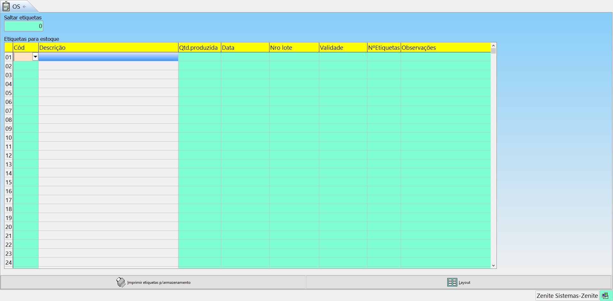
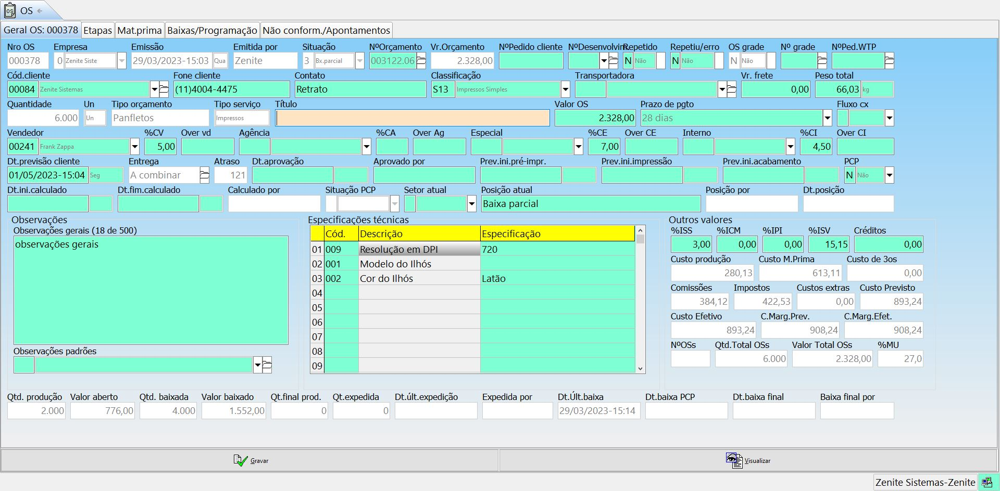
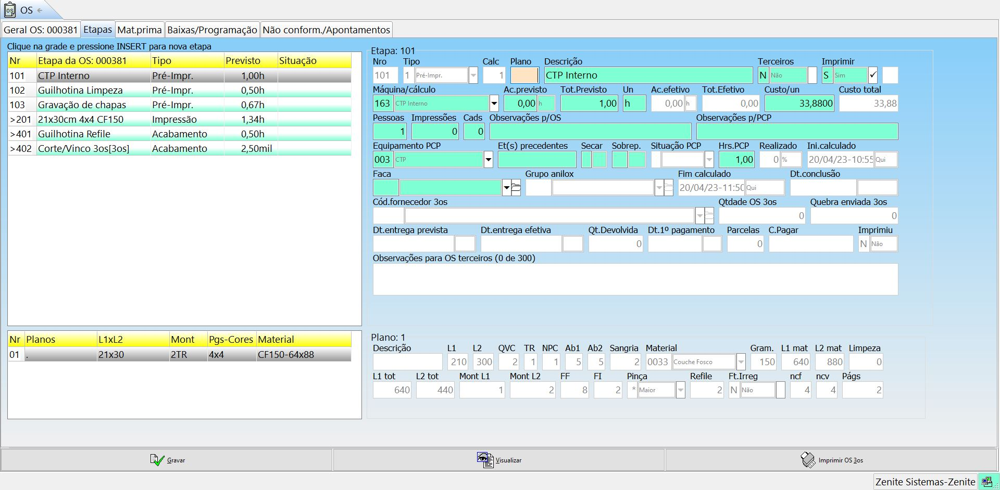
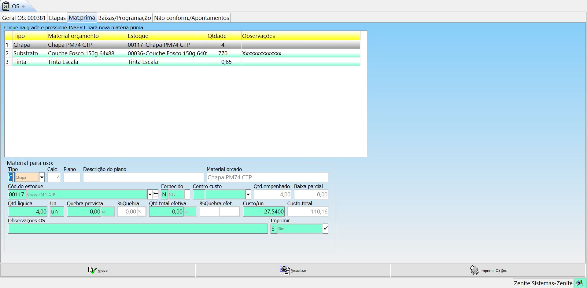

Situação das OSs
- Aguardando - Quando a OS é gerada.
- Em produção - Quando é apontada pelo PCP (inicio da produção).
- Produzida - Ao ser baixada pelo PCP (fim da produção).
- Bx. parcial - Ao ser baixado parcialmente.
- Concluída - Ao ser baixada completamente.
- Cancelada - Ao ser cancelada.
grade A situação não pode ser alterada de forma manual. Caso o usuário não tenha o módulo PCP, os apontamentos deverão ser feitos manualmente pelo campo "Posição atual" dentro da OS.

Aqui ficarão todas as ordens de serviço geradas pelo sistema.
F11-Outras opções
grade O número da Ordem de Serviço pode conter letra quando ela fizer parte de uma Programação de Produção ou Produção em Lote.
Arquivo de etapas:(aba "etapas") Irá direcionar para a lista que contém todos as etapas de todas as O.Ss do sistema. É através dela que iremos filtrar e gerar relatórios que envolvam as etapas.
Arquivo de materiais: (aba "mat. prima") Irá direcionar para a lista que contém todos as materias primas de todas as O.Ss do sistema. É através dela que iremos filtrar e gerar relatórios que envolvam as materias primas.
Arq. prog. produção O.S.: Direciona o usuário para uma página com todas as O.Ss que tiverem a produção dividida no orçamento ou no próprio menu de O.S. Seremos direcionados a lista de programações de todas as O.Ss.
Baixar auto O.S antigas: Permite que o usuário dê baixa em lote nas O.Ss antigas.
Menu inferior
O.Ss aberto: Apresenta um relatório de todas as O.Ss dos clientes que estão aguardando produção ou sendo produtivas.
Rótulos: utilizada para rotular embalagens de serviços que serão entregues aos clientes.
Etiquetas: utilizado para etiquetar embalagens de serviços (produtos acabados) que serão mantidos em estoque dentro da própria gráfica. Obs.: utilizado apenas quando a versão do GE contratada tem o módulo opcional de Produto Acabado.
Estornar: Ao estornar uma baixa de uma OS, o pré-faturamento será desfeito, a baixa será desfeita e a situação voltará para "aguardando". Caso o pré-faturamento já tenha sido feito, o estorno não afetará a NF nem o CR.
grade O PCP pode ser estornado através do estorno da OS.
Baixar OS: Indica que o serviço será faturado ou entregue ao cliente. Utilizado para indicar a conclusão da produção daquele serviço. Obs.: essa é a principal utilização desse botão, há outras variações de Baixas de Ordem de Serviço, como: Baixa Parcial, Baixar Apenas para Faturamento mantendo em Produção, Baixa Extra, Baixar Programação de Entrega (sub opção), Baixar e Enviar ao Estoque, etc…
Expedir: utilizado apenas por empresas que têm o departamento de expedição. Indica que o serviço está pronto e aguardando para ser faturado e/ou entregue (baixado).
Não enviará informação de baixa para o menu Financeiro.
É diferente da opção “Expedição e pacotes”.
xxx: xxx
grade Ao estornar uma baixa, a "posição atual" da OS ficará "estornada". Para mudar isso, basta enrar na OS e alterar o campo "Posição atual".
Cancelar: Indica que a produção foi cancelada por alguma razão. Usa-se o cancelar para não excluir a O.S. e perder os registros.
Etiquetas

Só é usado para materiasi de estoque
As colunas representam as informações que serão apresentadas na etiqueta.
Saltar etiquetas: Saltará o número de etiquetas respectivas, deixando o espaço na folha.
Incluir (Geral)

Nro O.S.: É gerada automaticamente ou manualmente, porém não podem retroagir mais de 100 O.Ss. O número a O.S. terá letras quando fizerem parte de uma programação de produção ou produção em lote.
Empresa: Se for alterado no orçamento irá recalcular as tributações e os índices. Se for alterado no menu O.S. não vai alterar os preços.
Situação: Poderá ser alterada por baixa no próprio menu O.S. ou pelo PCP.
N° orçamentos: É um atalho para acessar os orçamentos.
Vr. orçamento: Não se altera, a menos que o valor do orçamento seja alterado.
N° pedido cliente: É um código do próprio cliente, caso ele deseje informar na O.S. Se informado, irá preencher o campo "N° ped. cliente" no item da NF.
Repetido: Será marcado caso uma O.S. seja duplicada. Pode ser marcada manualmente também.
Repetiu/erro: Seve ser marcado se a O.S. for um retrabalho devido a algum erro. Essa informação sairá em relatórios.
O.S. grade | N° grade: Estão relacionadas aos orçamentos com grades de serviço.
N° ped. WTP: Não funciona! (projeto descontinuado).
Cód. cliente: É possívelalterar o cliente da O.S., mas isso não irá alterar o cliente do orçamento.
Classificação: Segmentação. Pode vir calculado do "Tipo de orçamento".
Título: Carrega do "título do serviço" no orçamento.
Valor O.S.: Esse valor pode ser alterado manualmente na O.S. ou automaticamente de acordo com a quantidade de baixas de O.S.
Fluxo cx: Se é para considerar ou não essa O.S. no "RELATORIO FIXO > FLUXO DE CAIXA".
Vendedor | %CV: Podem ser alterados na O.S. A %CV irá refletir diretamente no "FINANCEIRO > PAGAMENTO DE COMISSÕES".
Dt. aprovação | aprovado por: De forma manual, define quando a O.S. será aprovada.
Dt. previsão cliente | Entrega: Pode ser preenchida uatomaticamente caso o campo "PE" do orçamento seja preenchido.
Atraso: Começa a ser contada a partir do fim da data prevista até a data que a O.S. é baixada, chegando a um atraso médio.
PCP: Irá lançar a O.S. na fila de produção do PCP.
Prev. ini. pré. impr | Impressão | Acabamento: Podem ser preenchidos manualmente ou automaticamente pelo PCP.
Dt. ini. calculado | fin. calculado: Determina o inicio e o fim da O.S. de forma completa.
Calculado por | Situação PCP: Só é alterado pelo PCP.
Setor atual | posição atual: Indica o exato processo que a O.S. se encontra.
Observações gerais: São importados da aba "F9" Obs de item interno.
Ot. produção: ???
Valor aberto: Valor que está sendo produzido.
Valor baixado: Valor já produzido.
Qt. final prod: Será a quantidade total baixada.
Qt. expedida | Dt. Últ. Expedição | Expedida por: Só serão preenchidas pelo PCP.
Etapas

grade Para uma etapa de terceiros ser lançada no contas a pagar:
Terceiros: sim
Cód.fornecedor 3os: O fornecedor deve ser vinculado à OS
Dt.1° pagamento: Informe a data do primeiro pagamento
Parcelas: Informe o número de parcelas
Aqui serão apresentadas todas as etapas de todas as OSs internas e de terceiros. É possível adicionar etapas na OS através da primeira tabela, porém, não é o usual, essa etapa não será cobrada no orçamento.
grade Significado dos códigos:
- 100 a 199: pré-impressão
- 200 a 299: Impressão
- 300 a 399: Verniz
- 400 a 499: Acabamento
" < " e " > " indicam as precedências entre os setores da OS. Não indica a precedência entre processos. As situações das etapas só são alterados pelo PCP.
Nro: xxx
Tipo: xxx
Calc: Indica a linhaque a etapa é apresentada no manu "F5" do orçamento.
Plano: Indica o plano do orçamento.
Imprimir: Sefine se a etapa será impressa na OS.
Máquina/ cálculo: Indica qual máquina foi usada no cálculo da etapa.
Terceiros: Indica se a etapa será feita por terceiros ou não, também habilita e desabilita alguns campos da OS.
Ac. previsto: Tempo total de acerto previsto.
Tot. previsto: Tempo total gasto na etapa.
Ac. efetivo | Total efetivo: São retirados do pós-cálculo
Custo/ un: Indica o custo hora.
Custo total: Multiplica o "custo/ un" pelo "tot. previsto"
Pessoas: Mostra o número de pessoas involvidas no processo. Só faz diferença para etapas etapas hora x homem.
Impressões: Mostra o número total de impressões.
Cads: Mostra o número total de cadernos.
Entr: Mostra o número de entradas de máquina da etapa.
Observações p/ OS: Inseri uma informação na frente da etapa na ordem de serviço.
Observações p/ PCP: Inseri a observação no PCP. Será visualizado no mapa do PCP e no apontamento (apontar OS).
Faca: Vincula a faca usada na etapa.
Cad. fornecedor 3os: Seleciona um fornecedor para um trabalho terceirizado. Pode ser vinculado por padrão
diretamente no menu "cadastro de máquina".
Qtdade OS 3os: Quantidade enviada ao terceirizado.
Quebra enviada 3os: Quantidade de folhas para quebra enviada ao terceirizado.
Dt. entrega prevista: Previsão de entrega do terceirizado.
Dt. entrega efetiva: Data que, efetivamente, o trabalho foi entregue.
Qt. devolvida: Quantidade total devolvida.
Dt. 1° pagamento : Ao ser informado, irá lançar os valores para o "contas a pagar"
Parcelas: Auxilia o campo anterior.
Descrição: ???
L1 | L2: Largura x Altura.
FF: Formato final (Quantas folhas cabem no formato 1 da folha).
F1: ???
QVC: Quantidade de vezes na chapa.
TR: Informa se o plano tem tira-retira.
NPC: Número de páginas por chapa (mesmo valor da montagem).
Ab1 | Ab2: Abertura (lado 1 x lado 2)
NCF: Número cores frente
NCV: Número cores verso
Págs: ???
Matéria prima

Tipo: Seleciona o tipo da matéria prima.
Cód. do estoque: Vincula o material cadastrado no "substrato/ materiais".
Centro custo: Serão indicados os centros de custos.
grade Só os substratos são atrelados ao centro de custo.
Qtd. empenhada: Quantidade que será empenhada no estoque.
Baixa parcial: Baixa de uma parte do empenho.
Fornecido: Indica se o material será fornecido pelo cliente.
Qtd. Líquida: Quantidade sem o desconto de quebra.
Qtd. total efetiva: Quantidade total produzida.
Custo un: Custo unitário.
Custo total: (Custo unitário x quantidade empenhada).
Observações OS: Inseri uma observação na frente da matéria prima.
Imprimir: Habilita a impressão das informações.